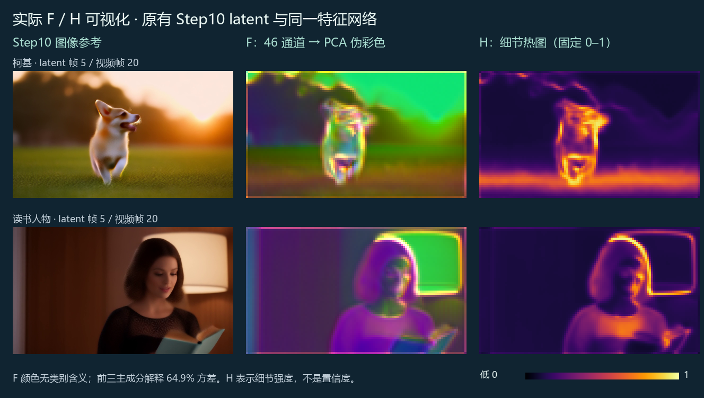
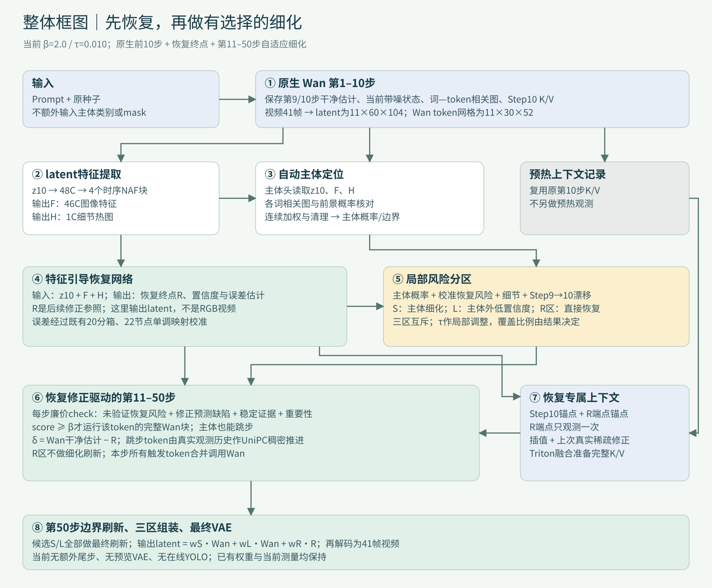
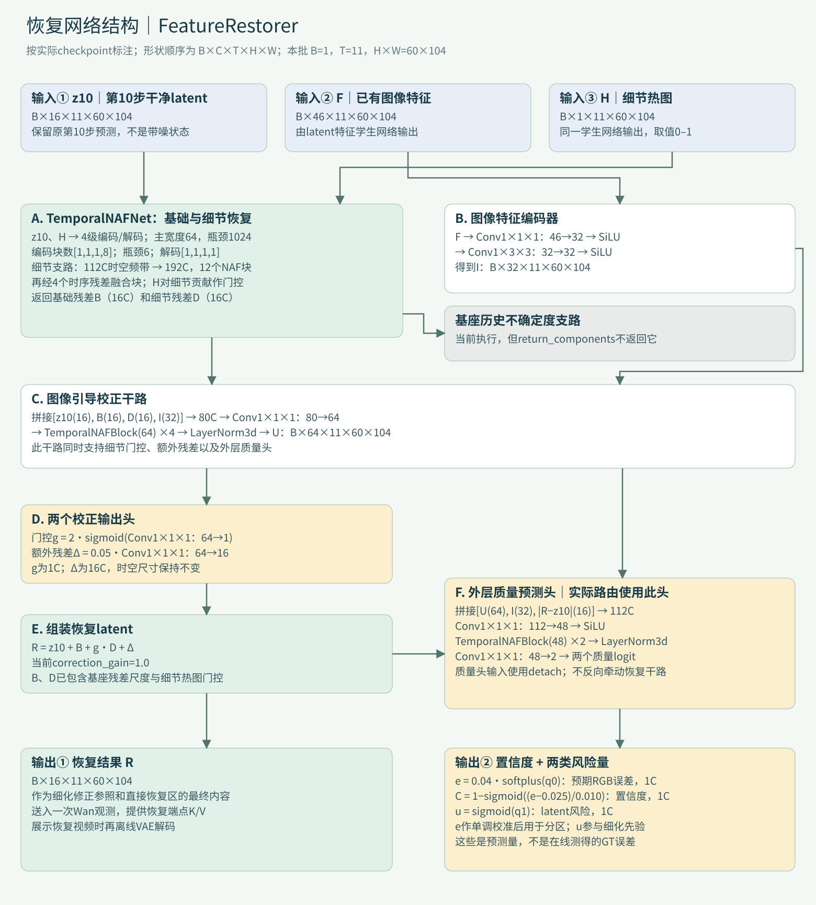

按用户选择，使用此前五组中总体最快的参数 β=2.0、τ=0.010，并保留最新的自动prompt主体定位与恢复专属融合算子。原九条prompt、原种子重新生成，所有最终视频均为本次实测结果。
这是一版偏速度的选择。“最快”限定于已经比较过的五组参数，不代表无限增大β后的绝对极限。平均LPIPS从此前自动 β=.75 的 0.02920 增至 0.04398，说明与GT的差异变大，不能称为无损。下方直接展示本版与GT，是否接受局部细节差异请以视频为准。
上下分支表达数据依赖，本实现没有声称恢复网络与Wan并行执行。仍是10步预热、恢复、原第11–50步选择性细化；没有后加5步恢复或额外训练。
恢复网络先给出答案R。后续真实调用Wan时，记录“Wan认为还应该改多少”：δ = Wan干净latent估计 − R。初始尚未验证时，δ从0开始。已经完成、且保持稳定的修正，不因为幅度大就反复重算。
只有恢复风险还未被验证、修正预测出现新误差，或附近发现了新修正时，刷新需求才增加。主体的重要性更高，但主体也可以跳步。
每个原采样步都计算轻量分数。大于β才把该token送入Wan，并更新真实修正证据；跳过的位置不能凭空获得新的Wan误差。它们沿已有真实历史作数值推进。
没有每隔7、8、10、12步的固定档位。越久未检查，需求会积累；末段log-SNR变化加大，通常更容易触发。第50步对全部候选细化token刷新，是既有融合边界。
P是自动主体概率，H是已有细节热图，h是距上次真实观测的log-SNR间隔。ρ是校准恢复风险相对局部容差的比值；E是已经观察到的稳定修正证据；K是修正预测误差随间隔的估计；N是邻域近期新误差，随时间衰减。u=.25×已有latent风险输出，用作尺度先验，不是概率保证。真实刷新时再更新K、N、E。所有比较都发生在latent/token层，不用GT参与推理。
本步触发的token仍执行完整Wan块，并参考完整空间的K/V上下文；跳过的token使用恢复锚点和上次真实修正构造上下文。省下的是选择性计算与上下文准备，不是把整幅图的注意力全部删掉。原生Wan没有提前得到的恢复终点R，不能直接套用这条双锚点计算流。
相同参数下，融合算子在上一轮成对实验中保持输出逐值一致；本轮提高β会改变采样轨迹，不能把算子的等价性当成β=2.0相对β=.75无损的证据。恢复端点观测的开销已计入本轮总时间。
读取原九例保存的 Step10 clean latent，用原有 latent 特征网络和原权重重新提取 F、H。输入是 16×11×60×104 latent；输出为 F：46×11×60×104 和 H：1×11×60×104。这些是恢复网络实际接收的特征。九例回放的恢复结果、置信度、预期误差与原保存值均逐值一致。

正在载入实际特征图…
黑→白表示该通道数值从低→高。同一通道跨案例、跨帧采用固定色标；不同通道的范围不同，不能直接以亮度比较数值大小。
本节展开当前β=2.0方案的真实结构。图中z10均指第10步预测的干净latent；原生采样器的第10步带噪状态另行保存，用于后续积分。通道与层数来自实际加载的checkpoint，而非类定义默认值。

| 组件 | 输入 | 输出 | 功能及当前实现 |
|---|---|---|---|
| 原生Wan预热 | Prompt、种子 | z10、z9、带噪状态、词空间图、Step10 K/V | 保持原生前十步；提供恢复输入、自动主体信号、稀疏积分初始历史与第一上下文锚点。 |
| latent特征学生网络 | z10（16C） | F（46C）、H（1C） | Conv3d 16→48，4个时序NAF块，归一化和47C输出；前46C为特征，最后1C经sigmoid为细节热图。无需先VAE解码。 |
| 自动prompt关联 | Prompt各词、第10步4层相关图、主体头概率 | 加权文本热图 | 对每个词计算前景与背景相关性的差异，取正值平方并归一化；动作词、修饰词也可贡献，无手工subject。 |
| latent主体头 | 拼接z10/F/H，共63C | 1C前景概率 | Conv3d 63→32，4个时序NAF块，归一化与1C输出；外部sigmoid后与文本热图融合，再清理连通碎片。历史使用过离线YOLOE监督。 |
| FeatureRestorer恢复网络 | z10（16C）、F（46C）、H（1C） | R（16C）、C/e/u（各1C） | 基础/细节恢复 + 图像特征校正 + 外层质量头。图2展开结构。当前恢复网络总参数约73.035M，包含未被上层使用的基座旧质量支路。 |
| 恢复误差校准 | 外层质量头的预期RGB误差e | 校准后的误差估计 | 当前实际使用20分箱、22节点单调分段线性映射。不是上下文校准网络；不把离线校准真值当作在线输入。 |
| 互斥三区路由 | 主体概率、校准误差、H、z10−z9漂移 | S、L、R区及局部风险 | τ=.010经主体/细节/漂移调整；S/L互斥、可靠主体也可直接恢复。候选覆盖不设固定比例。 |
| 恢复修正事件控制器 | R、真实Wan修正历史、恢复风险、主体重要性 | 本采样步需要计算的token集合 | 每步轻量check。已验证稳定的修正降低需求，未预测的新修正提高需求；score≥β=2.0才触发。 |
| 逐token积分器 | 真实观测与各token自己的历史、当前sigma | 本步和跳步位置的latent状态 | UniPC-2/bh2稠密输出。只把真实Wan预测加入历史；R区沿恢复端点轨迹推进，不另加随机噪声。 |
| 恢复双锚点上下文与融合算子 | Step10 K/V、恢复端点K/V、稀疏真实修正 | 各层完整K/V上下文 | R提前可用，因此可用双锚点插值加测得修正。Triton融合上下文准备；触发token仍执行完整Wan块。 |
| 第50步融合与最终VAE | 最终Wan latent、R、三区权重 | 最终41帧视频 | 所有候选S/L在第50步刷新。按原权重组装后VAE解码；本版无额外尾部恢复步骤。 |
FeatureRestorer由“基础/细节恢复主干 → 图像特征引导校正 → 外层质量预测”组成。恢复输出R是16通道latent；置信度C、预期RGB误差e和latent风险u都是每个位置一个值。在线并不先输出恢复RGB图再识别主体。

| 阶段 | 通道C | 时间×空间尺寸 | 结构 |
|---|---|---|---|
| 输入与空间补齐 | 16 | 11×60×104 → 11×64×112 | 仅补齐空间至16的倍数，时间轴不下采样 |
| 编码1 | 64 | 11×64×112 | 1个NAF块 → 空间↓2 |
| 编码2 | 128 | 11×32×56 | 1个NAF块 → 空间↓2 |
| 编码3 | 256 | 11×16×28 | 1个NAF块 → 空间↓2 |
| 编码4 | 512 | 11×8×14 | 8个NAF块 → 空间↓2 |
| 瓶颈 | 1024 | 11×4×7 | 6个NAF块 |
| 解码4→1 | 512→256→128→64 | 8×14 → 16×28 → 32×56 → 64×112 | 每级1个NAF块；空间PixelShuffle上采样，与对应编码特征相加 |
| 基础残差B | 16 | 11×60×104 | LayerNorm + 1×3×3卷积，乘0.107后裁剪 |
| 时空细节输入 | 112→192 | 11×64×112 | 3/5/9空间高通 + x/y梯度 + 时间一/二阶差分；7×16通道 |
| 细节支路D | 192→16 | 11×60×104 | 12个NAF块 + 4个时序残差融合块；乘0.195与热图门控，裁剪 |
各级编码与解码注入缩放后的H。细节热图以0.35强度做时间平滑，门控下限0.2；四个TemporalResidualFusion的时间间距为1/2/1/2。当前checkpoint含已微调主干权重，加载基座后由恢复checkpoint中的嵌入权重覆盖。
一个时序NAF块首先做通道归一化和1×1×1通道扩展，然后依次经过1×3×3空间深度卷积、3×1×1时间深度卷积、SimpleGate（将通道两半相乘）与简化通道注意力，再投影并残差相加。第二段是归一化、通道扩展、SimpleGate和投影，再做一次残差相加。块内的可学习残差系数与刷新阈值β不是同一个参数。
质量头先拼接112通道，再投影到48通道，经过2个时序NAF块、归一化与2通道输出层。e用于校准恢复误差，u作为细化先验。C是预测误差映射得到的置信度，不是在线计算的真值准确率。
基座TemporalNAFNet里还保留旧token uncertainty支路；当前forward会执行它，但FeatureRestorer使用return_components，只接收B/D，因此该旧支路的结果没有用于当前分区。图2灰框专门标出这一点。本轮只补文档，没有删除该分支或改变速度记录。
参数量：恢复网络73,034,884；latent特征学生95,567；主体头88,481。现有视频、参数、模型与实测速率未改动。结构参数、组件接口与来源哈希
| 项目 | 当前值 | 作用 |
|---|---|---|
| 刷新触发阈值 β | 2.0 | 比此前自动版.75更难触发，减少主体与低置信度区域的真实Wan调用 |
| 局部容差基准 τ | 0.010 | 决定初始候选细化区；根据主体、细节与Step9→10漂移调整，不是每个位置同一门槛 |
| 自适应策略 | restoration_debt；risk_power=1 | 使用恢复风险、修正预测缺陷和真实稳定证据；无刷新次数档位 |
| 主体重要性 | I = 1 + 3P + 0.5H | 连续加权；更重要的token更容易刷新 |
| 主体信息 | 自动prompt + 已有latent主体头 | 第10步零起始层5/10/15/20提取词语空间相关图，按前景/背景相关性差异连续加权 |
| 主体融合与清理 | sigmoid(1.5 logit(Phead) + .5 logit(Ptext)) | 低阈值.40形成连通区；保留包含≥.60种子的区域，面积至少4个token；这是语义边界清理，不是刷新分档 |
| 区域归属 | S = 候选∩主体；L = 候选∩非主体；R = 非候选 | S/L互斥；可靠的主体token可属于R；归属在Step10确定，本步计算集合随时变化 |
| 采样与融合 | 原生1–10；选择性11–50；额外尾步0 | R始终0次刷新；第50步刷新全部S/L；保持原权重组装 |
| 跳步状态 | 逐token UniPC-2 / bh2 稠密输出 | 按实际sigma推进，积分历史只加入真实Wan观测；不额外随机加噪 |
| 上下文后端 | 恢复双锚点 + 稀疏修正融合算子 | 保留既有注意力/GEMM，融合恢复方法特有的上下文准备 |
| 输入与模型 | Wan2.1 T2V 1.3B；832×480；41帧；16fps | 原模型、恢复网络、特征网络、主体头和校准保持；无新网络、无再训练 |
drift取第9→10步干净latent的变化强度，经归一化并截断到0–3；它是变化代理，不是光流。风险除以局部容差，并加入邻域和边界保护，决定是否进入候选细化区。τ是当前模型误差量纲的容差基准，不是“图像误差保证低于1%”。
自动主体选择不需要手工subject字段，也没有按这九个案例硬编码类别。它会筛去功能词、合并重复词，并根据已有主体头与各词的空间相关性连续加权；有时动作词、形容词也会贡献。无有效正向词语时使用中性文本条件并记录回退。
在线不运行YOLO、不做预览VAE；已有主体头过去使用过离线YOLOE掩码监督，这一训练来源没有改变。本次自动化验证覆盖原九条英文prompt，未对复杂多主体或其他语言作生成验证。
| 案例 | 历史GT / 秒 | 本版β2 / 秒 | 本版加速比 | 此前自动β.75 / 秒 | 本版与GT LPIPS | β.75与GT LPIPS |
|---|---|---|---|---|---|---|
| 牛群 | 74.92 | 30.92 | 2.42× | 35.59 | 0.02966 | 0.01905 |
| 骑车人物 | 75.05 | 30.74 | 2.44× | 36.54 | 0.06611 | 0.03655 |
| 沿海摩托车 | 74.48 | 28.62 | 2.60× | 32.18 | 0.06057 | 0.03968 |
| 吉他人物 | 75.08 | 29.35 | 2.56× | 33.46 | 0.01602 | 0.01045 |
| 柯基 | 74.52 | 28.06 | 2.66× | 31.18 | 0.04207 | 0.03316 |
| 奔马 | 74.63 | 26.56 | 2.81× | 28.83 | 0.05205 | 0.02631 |
| 宇航员 | 74.86 | 28.15 | 2.66× | 31.96 | 0.07526 | 0.05967 |
| 缝纫机 | 74.69 | 29.07 | 2.57× | 33.37 | 0.02827 | 0.01689 |
| 读书人物 | 74.43 | 27.16 | 2.74× | 30.31 | 0.02586 | 0.02102 |
九例合计从此前自动 β=.75 的 293.44 秒降至 258.62 秒，在同一自动主体与融合后端上额外提速 13.5%。相对历史原生GT50合计 672.67 秒，整体为 2.60×。总加速比按“GT总时间 ÷ 本版总时间”计算，不是逐例倍率的算术平均。
旧五组参数采用手工主体、未融合上下文的实现，β=.75/1/1.25/1.5/2对应整体约2.16/2.27/2.35/2.41/2.48×；β2在那组中总体最快。本报告使用当前自动主体和融合后端重新测量β2，旧速度不能作为本版实测。此前β.75与GT使用同prompt/seed历史记录，每例本版为一次新生成，时间存在单次波动。
| 阶段 | 九例合计 / 秒 | 每例平均 / 秒 | 占本版总时间 |
|---|---|---|---|
| 文本编码 | 1.671 | 0.186 | 0.6% |
| 原生前10步与自动文本相关图 | 128.128 | 14.236 | 49.5% |
| latent特征、恢复与置信度 | 1.047 | 0.116 | 0.4% |
| 自动主体融合与分区 | 0.089 | 0.010 | 0.0% |
| 第11–50步选择性细化 | 83.758 | 9.306 | 32.4% |
| 最终VAE解码 | 25.075 | 2.786 | 9.7% |
| 视频编码 | 5.959 | 0.662 | 2.3% |
| 其余在线开销（含恢复端点K/V观测与初始化） | 12.896 | 1.433 | 5.0% |
A800 80GB · PyTorch 2.5.1+cu124。计时包含文本编码、自动相关图、原生前十步、恢复、校准与分区、恢复端点K/V观测、所有细化与积分、最终VAE和视频编码。模型加载、指标计算、报告制作不计入；首次在生成内发生的JIT包含在计时内。阶段外差值单列，不能遗漏恢复端点观测。模型常驻复用，精度与实现沿用上一版。
全体token在后40步平均真实刷新 7.58 次，包含恢复区的0次和第50步边界刷新。这个平均数不是预先指定的次数。减少调用通常也减少修复机会：本报告保留GT联合视频和此前β.75指标，便于判断速度是否值得局部细节变化。
首、中、尾抽样帧的整体构图接近GT；但局部差异可见，尤其是骑车人物的衣褶与车篮纹理、宇航员装备和衣物、以及奔马首帧的腿部姿态。当前β2是速度优先选择，不能宣称肉眼完全无差异。
| 案例 | 抽样观察：本版与GT |
|---|---|
| 牛群 | 牛群与草地布局接近；前景移动牛的腿部轮廓、遮挡边缘和草地细节有局部差异。 |
| 骑车人物 | 骑车构图和主体位置接近；羽绒服褶皱、裤子纹理、车篮和车把局部细节存在可见变化。 |
| 沿海摩托车 | 摩托车和经过车辆的整体布局接近；海面反光/纹理、护栏和远岸细节不同，不能视为逐像素等价。 |
| 吉他人物 | 人物姿态与吉他构图接近，抽样差异相对较小；脸部细节、手指和琴体高光仍有变化。 |
| 柯基 | 主体动作轮廓和夕阳构图接近；毛发、草地细节与局部明暗存在差异。 |
| 奔马 | 远景和奔跑方向接近；首帧马腿姿态有可见差异，草地纹理与尘土形态也不同。 |
| 宇航员 | 主体与逆光构图接近；管线、胸前装备、裤腿形状及星空/光晕细节存在可见差异，是需重点观看的案例。 |
| 缝纫机 | 机身布局接近；针线与金属反光细节、表面纹理有变化。 |
| 读书人物 | 脸部和读书构图接近；头发、蕾丝衣物和书页纹理存在局部差异。 |
以上是27组同帧对照的人工观察，未作完整运动实播或盲测；描述的是本版与GT的差异，不把所有差异都归因于本次提高β。
主视频只比较本版与GT。展开每例可查看Step10、恢复结果、实际三区、连续刷新次数图与第11–50步触发图。视频帧滑条控制时间帧；采样步滑条控制扩散步骤，两者不是同一个维度。可全屏查看细节。
a cow running to join a herd of its kind
左：本次 β=2.0 自动主体版本；右：同prompt、同种子的原生GT50。41帧 / 16fps，同帧联合视频。种子 20260830；案例 0315。
LPIPS（越低越接近GT）：本版 0.02966，此前自动 β=.75 为 0.01905。本版与此前自动版 LPIPS 0.01648。
黄：主体细化 34.5% · 红：主体外低置信度 36.5% · 青：直接恢复 29.0%。
深色 0 次 → 浅金 40 次。主体平均 17.06 次，主体外低置信度 8.31 次；直接恢复区 0 次。
金：本步刷新 · 深灰：候选细化区本步跳过 · 浅灰：直接恢复区。第50步对所有候选细化token做边界刷新。
绿：所有本步查询 / 全部token；黄：主体；红：主体外低置信度。图中频率是实测结果，没有固定档位。
词语的空间相关图与已有latent主体头核对后连续加权；可包含动作与修饰词，不需要手工subject字段。
A person is riding a bike
左：本次 β=2.0 自动主体版本；右：同prompt、同种子的原生GT50。41帧 / 16fps，同帧联合视频。种子 20260828；案例 0157。
LPIPS（越低越接近GT）：本版 0.06611，此前自动 β=.75 为 0.03655。本版与此前自动版 LPIPS 0.03772。
黄：主体细化 47.8% · 红：主体外低置信度 38.4% · 青：直接恢复 13.8%。
深色 0 次 → 浅金 40 次。主体平均 14.60 次，主体外低置信度 8.09 次；直接恢复区 0 次。
金：本步刷新 · 深灰：候选细化区本步跳过 · 浅灰：直接恢复区。第50步对所有候选细化token做边界刷新。
绿：所有本步查询 / 全部token；黄：主体；红：主体外低置信度。图中频率是实测结果，没有固定档位。
词语的空间相关图与已有latent主体头核对后连续加权；可包含动作与修饰词，不需要手工subject字段。
a motorcycle cruising along a coastal highway
左：本次 β=2.0 自动主体版本；右：同prompt、同种子的原生GT50。41帧 / 16fps，同帧联合视频。种子 20260828；案例 0272。
LPIPS（越低越接近GT）：本版 0.06057，此前自动 β=.75 为 0.03968。本版与此前自动版 LPIPS 0.02630。
黄：主体细化 11.0% · 红：主体外低置信度 72.2% · 青：直接恢复 16.7%。
深色 0 次 → 浅金 40 次。主体平均 18.81 次，主体外低置信度 7.45 次；直接恢复区 0 次。
金：本步刷新 · 深灰：候选细化区本步跳过 · 浅灰：直接恢复区。第50步对所有候选细化token做边界刷新。
绿：所有本步查询 / 全部token；黄：主体；红：主体外低置信度。图中频率是实测结果，没有固定档位。
词语的空间相关图与已有latent主体头核对后连续加权；可包含动作与修饰词，不需要手工subject字段。
An Iron man is playing the electronic guitar, high electronic guitar.
左：本次 β=2.0 自动主体版本；右：同prompt、同种子的原生GT50。41帧 / 16fps，同帧联合视频。种子 20260830；案例 0730。
LPIPS（越低越接近GT）：本版 0.01602，此前自动 β=.75 为 0.01045。本版与此前自动版 LPIPS 0.00627。
黄：主体细化 47.0% · 红：主体外低置信度 16.2% · 青：直接恢复 36.8%。
深色 0 次 → 浅金 40 次。主体平均 15.07 次，主体外低置信度 7.91 次；直接恢复区 0 次。
金：本步刷新 · 深灰：候选细化区本步跳过 · 浅灰：直接恢复区。第50步对所有候选细化token做边界刷新。
绿：所有本步查询 / 全部token；黄：主体；红：主体外低置信度。图中频率是实测结果，没有固定档位。
词语的空间相关图与已有latent主体头核对后连续加权；可包含动作与修饰词，不需要手工subject字段。
A cute happy Corgi playing in park, sunset, zoom out
左：本次 β=2.0 自动主体版本；右：同prompt、同种子的原生GT50。41帧 / 16fps，同帧联合视频。种子 20260828；案例 0625。
LPIPS（越低越接近GT）：本版 0.04207，此前自动 β=.75 为 0.03316。本版与此前自动版 LPIPS 0.01064。
黄：主体细化 22.4% · 红：主体外低置信度 62.9% · 青：直接恢复 14.7%。
深色 0 次 → 浅金 40 次。主体平均 14.49 次，主体外低置信度 5.97 次；直接恢复区 0 次。
金：本步刷新 · 深灰：候选细化区本步跳过 · 浅灰：直接恢复区。第50步对所有候选细化token做边界刷新。
绿：所有本步查询 / 全部token；黄：主体；红：主体外低置信度。图中频率是实测结果，没有固定档位。
词语的空间相关图与已有latent主体头核对后连续加权；可包含动作与修饰词，不需要手工subject字段。
a horse galloping across an open field
左：本次 β=2.0 自动主体版本；右：同prompt、同种子的原生GT50。41帧 / 16fps，同帧联合视频。种子 20260828；案例 0307。
LPIPS（越低越接近GT）：本版 0.05205，此前自动 β=.75 为 0.02631。本版与此前自动版 LPIPS 0.02140。
黄：主体细化 2.2% · 红：主体外低置信度 73.2% · 青：直接恢复 24.6%。
深色 0 次 → 浅金 40 次。主体平均 19.69 次，主体外低置信度 6.65 次；直接恢复区 0 次。
金：本步刷新 · 深灰：候选细化区本步跳过 · 浅灰：直接恢复区。第50步对所有候选细化token做边界刷新。
绿：所有本步查询 / 全部token；黄：主体；红：主体外低置信度。图中频率是实测结果，没有固定档位。
词语的空间相关图与已有latent主体头核对后连续加权；可包含动作与修饰词，不需要手工subject字段。
An astronaut flying in space, in super slow motion
左：本次 β=2.0 自动主体版本；右：同prompt、同种子的原生GT50。41帧 / 16fps，同帧联合视频。种子 20260828；案例 0663。
LPIPS（越低越接近GT）：本版 0.07526，此前自动 β=.75 为 0.05967。本版与此前自动版 LPIPS 0.03915。
黄：主体细化 17.4% · 红：主体外低置信度 67.9% · 青：直接恢复 14.8%。
深色 0 次 → 浅金 40 次。主体平均 16.92 次，主体外低置信度 6.05 次；直接恢复区 0 次。
金：本步刷新 · 深灰：候选细化区本步跳过 · 浅灰：直接恢复区。第50步对所有候选细化token做边界刷新。
绿：所有本步查询 / 全部token；黄：主体；红：主体外低置信度。图中频率是实测结果，没有固定档位。
词语的空间相关图与已有latent主体头核对后连续加权；可包含动作与修饰词，不需要手工subject字段。
Sewing machine, old sewing machine working.
左：本次 β=2.0 自动主体版本；右：同prompt、同种子的原生GT50。41帧 / 16fps，同帧联合视频。种子 20260828；案例 0722。
LPIPS（越低越接近GT）：本版 0.02827，此前自动 β=.75 为 0.01689。本版与此前自动版 LPIPS 0.01599。
黄：主体细化 42.2% · 红：主体外低置信度 37.5% · 青：直接恢复 20.4%。
深色 0 次 → 浅金 40 次。主体平均 13.17 次，主体外低置信度 6.76 次；直接恢复区 0 次。
金：本步刷新 · 深灰：候选细化区本步跳过 · 浅灰：直接恢复区。第50步对所有候选细化token做边界刷新。
绿：所有本步查询 / 全部token；黄：主体；红：主体外低置信度。图中频率是实测结果，没有固定档位。
词语的空间相关图与已有latent主体头核对后连续加权；可包含动作与修饰词，不需要手工subject字段。
Gwen Stacy reading a book
左：本次 β=2.0 自动主体版本；右：同prompt、同种子的原生GT50。41帧 / 16fps，同帧联合视频。种子 20260828；案例 0744。
LPIPS（越低越接近GT）：本版 0.02586，此前自动 β=.75 为 0.02102。本版与此前自动版 LPIPS 0.00870。
黄：主体细化 36.2% · 红：主体外低置信度 27.7% · 青：直接恢复 36.1%。
深色 0 次 → 浅金 40 次。主体平均 12.28 次，主体外低置信度 5.41 次；直接恢复区 0 次。
金：本步刷新 · 深灰：候选细化区本步跳过 · 浅灰：直接恢复区。第50步对所有候选细化token做边界刷新。
绿：所有本步查询 / 全部token；黄：主体；红：主体外低置信度。图中频率是实测结果，没有固定档位。
词语的空间相关图与已有latent主体头核对后连续加权；可包含动作与修饰词，不需要手工subject字段。
python generate_auto_prompt.py \ --prompt "A cute happy Corgi playing in park, sunset, zoom out" \ --seed 20260828 --out /path/to/output \ --refinement-budget 2.0 --quality-tolerance 0.010
命令在已配置的服务器冻结runtime与原模型环境中使用。此轮没有改写公共入口原来的β=.75默认值，因此必须显式传入上述β2参数；本次九例验证器已固定β2。原生模型、恢复网络、特征网络、主体头与校准文件须与测量记录一致。
同原自动 β=.75 的Step10、恢复输出、置信度和初始分区逐值核对一致，才复用其Step10与恢复展示视频。最终结果、刷新图和次数均来自本轮新运行。九段联合视频与十八段中间视频已全帧解码，并核对联合视频两路来源；617.76万个token刷新决策按当前β2规则重新审计。
质量检查包含首、中、尾帧的人工抽样；它不能替代完整视频观看或盲测。LPIPS/SSIM用于定位差异，不是主观质量保证。媒体解码与页面交互逻辑检查不等于浏览器实播验证；本次没有声称完成浏览器实际播放检查。